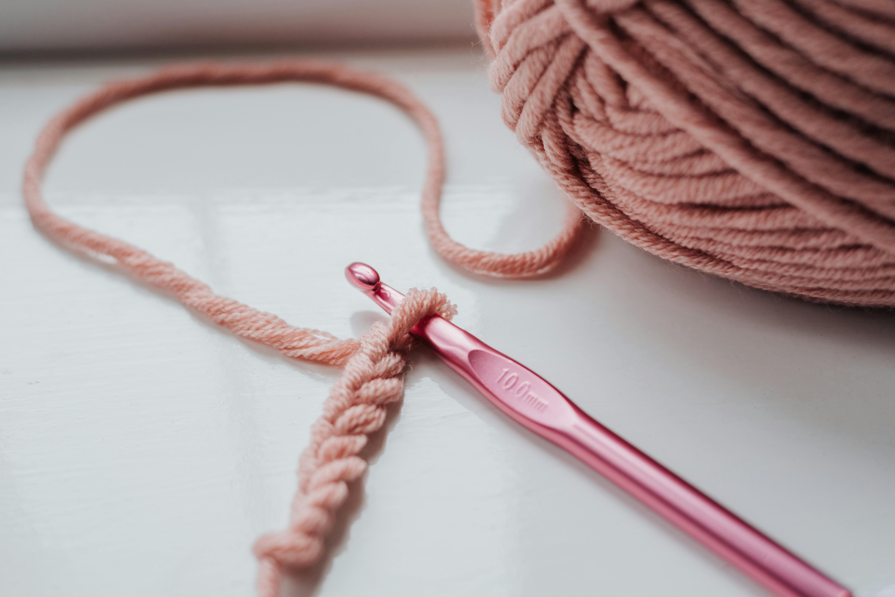
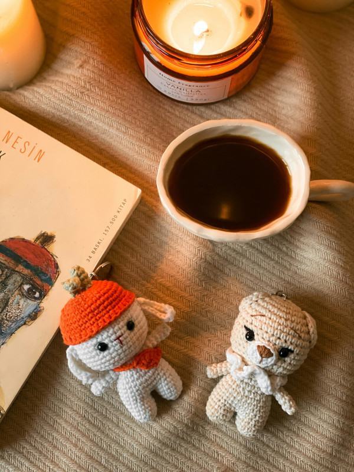
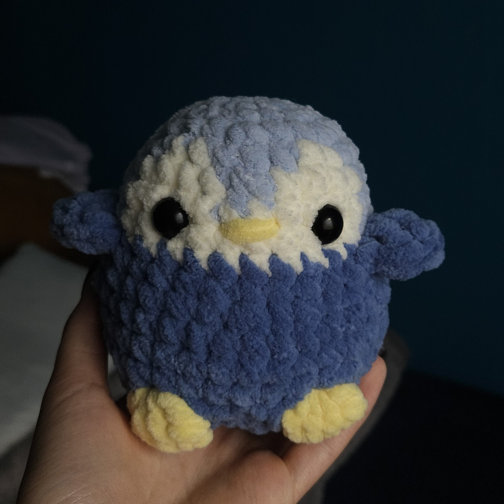
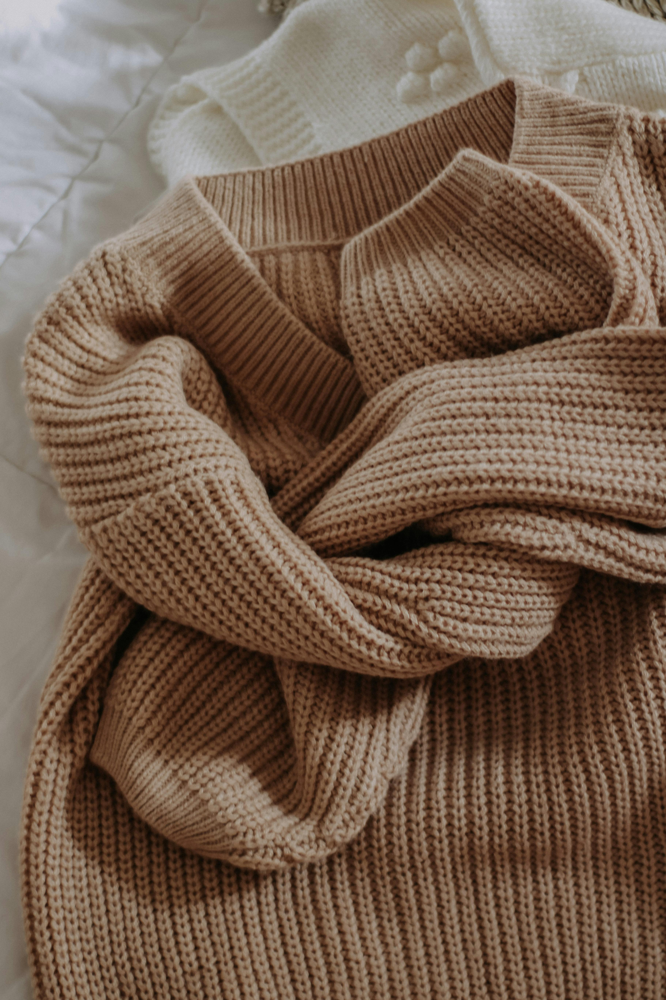
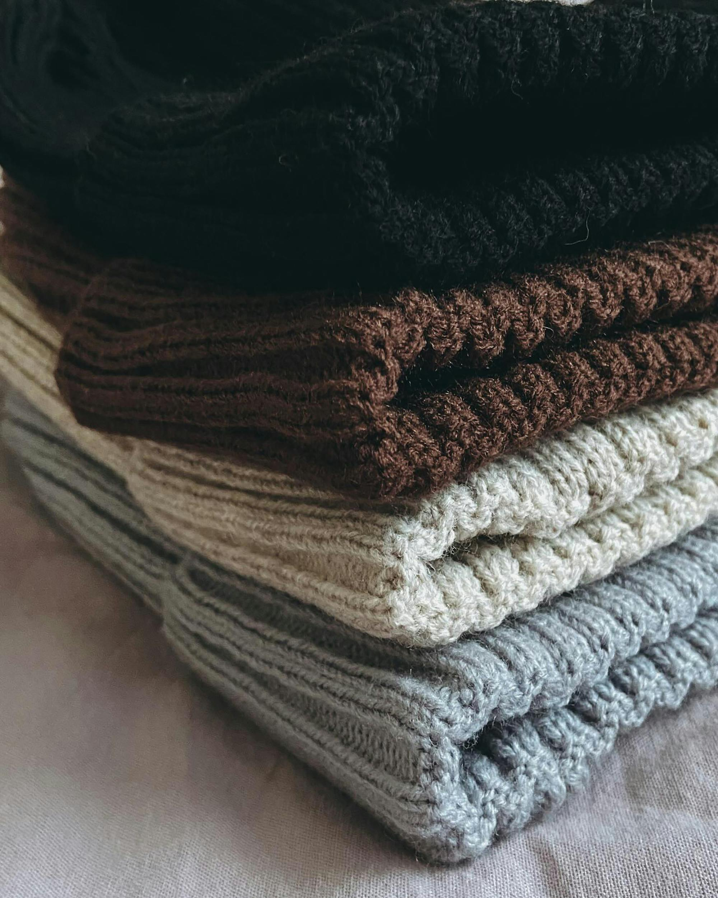
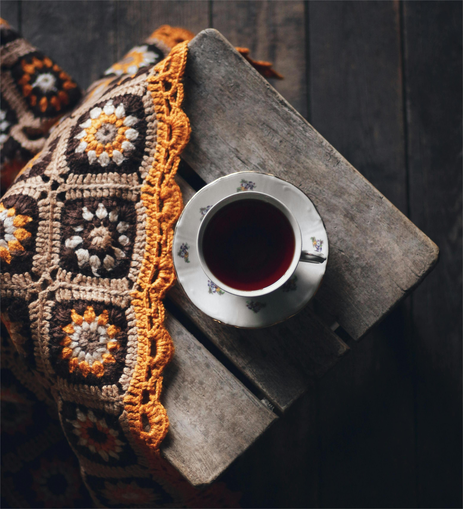
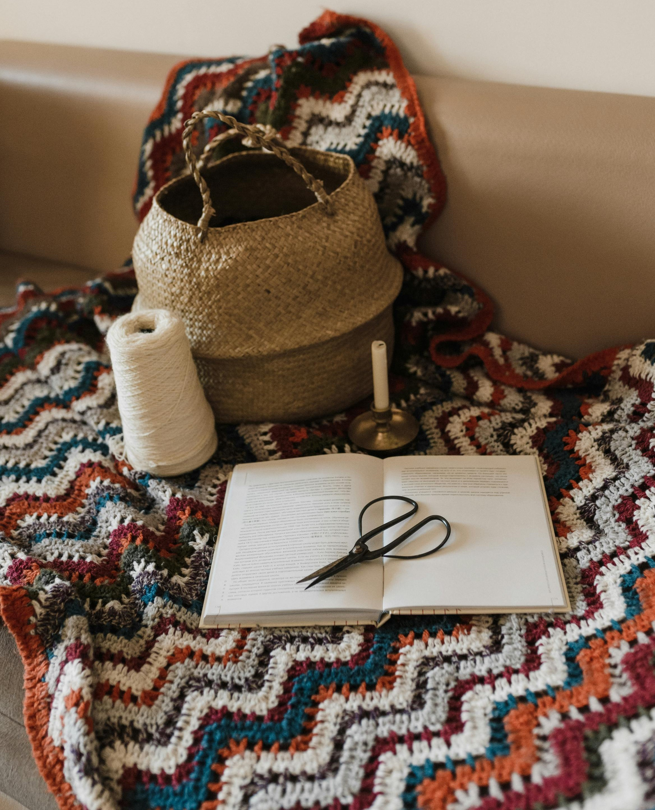
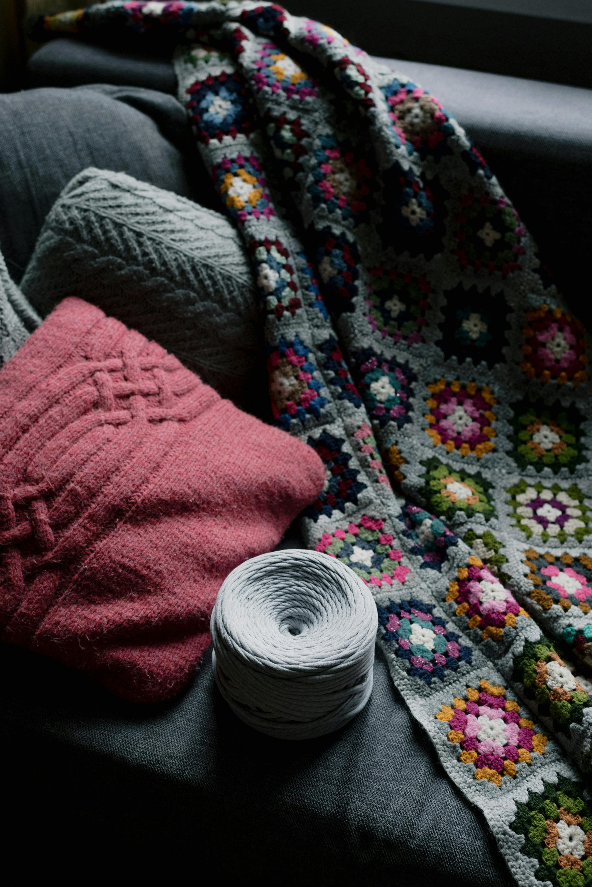
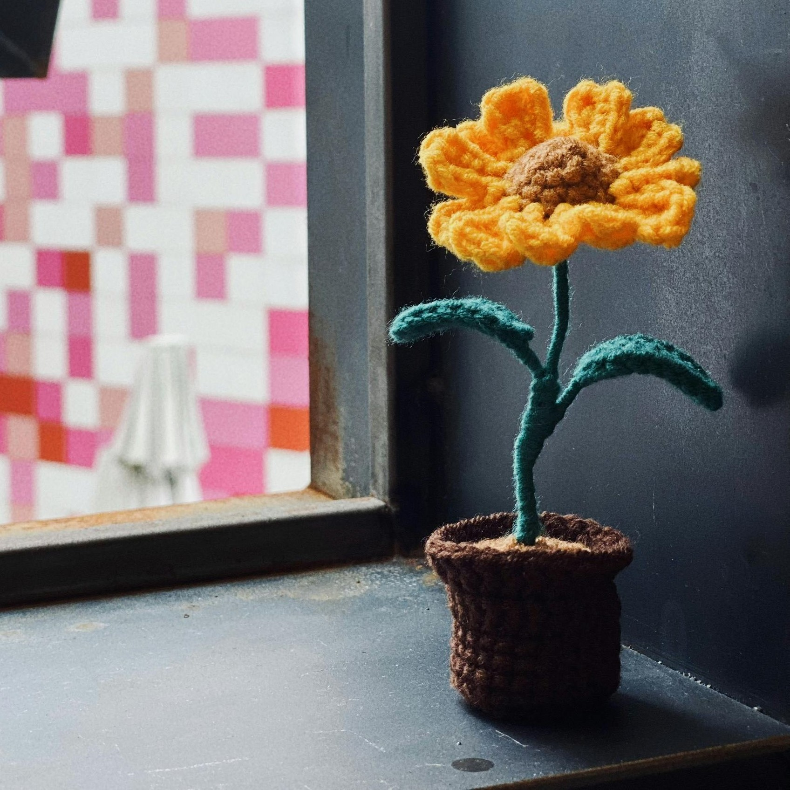

Dlaczego warto wybierać produkty handmade?
Rękodzieło to nie tylko moda, ale świadomy wybór. Odkryj 5 powodów, dla których handmade to inwestycja w jakość i emocje.
Czytaj więcejWejdź do miejsca, gdzie każda włóczka ma swoją historię, a każdy splot – odrobinę magii.
Witaj w Zaczarowany Kordonek – miejscu, gdzie włóczka, pomysł i pasja splatają się w coś wyjątkowego. Jesteśmy małą, rodzinną pracownią rękodzieła, która powstała z miłości do szydełka i potrzeby tworzenia rzeczy z duszą. Nasza historia zaczęła się od jednego sznurka i pomysłu na prezent dla przyjaciółki – dziś tworzymy setki unikatowych produktów, które trafiają do domów w całej Polsce.
Wierzymy, że w świecie masowej produkcji warto zatrzymać się na chwilę i docenić piękno przedmiotów, które powstają powoli – z sercem i uważnością. Każdy nasz pluszak, czapka czy kocyk jest wykonany ręcznie, dzięki czemu nie ma dwóch identycznych egzemplarzy. Używamy różnych rodzajów włóczek – od miękkich, futerkowych,idealnych na przytulne maskotki, po bawełniane i wełniane do delikatnych ubrań i dodatków. Starannie dobieramy materiały tak, by były przyjemne w dotyku, trwałe i bezpieczne – szczególnie dla najmłodszych.
Naszym celem jest tworzenie rzeczy, które wywołują uśmiech i ciepło. W ofercie znajdziesz zarówno pluszaki dla dzieci, jak i stylowe dodatki do domu czy ubrania na każdą porę roku. Każdy projekt zaczynamy od szkicu i doboru kolorów, a kończymy dopiero, gdy produkt spełnia nasze wysokie standardy jakości.
Zaczarowany Kordonek to nie tylko sklep, ale też społeczność miłośników handmade. Dzielimy się poradami, wzorami i inspiracjami na naszym blogu oraz w mediach społecznościowych. Zapraszamy do świata, w którym każdy splot ma znaczenie, a zwykły kawałek włóczki może zamienić się w coś magicznego.

Nasze pluszaki to coś więcej niż zabawki – to mali towarzysze codziennych przygód. Każdy z nich jest szydełkowany ręcznie z miękkiej, hipoalergicznej włóczki, dzięki czemu są bezpieczne nawet dla najmłodszych. W ofercie znajdziesz klasyczne misie, kotki, króliczki i inne zwierzaki, które można personalizować według własnych pomysłów – wybierz kolory, imię czy nawet specjalne dodatki! To idealny prezent na narodziny, urodziny czy święta. Każdy pluszak powstaje z ogromną starannością i miłością do detalu, dlatego masz pewność, że trafi do Ciebie coś jedynego w swoim rodzaju.


Szydełkowane ubrania to nie tylko moda – to styl życia. W Zaczarowany Kordonek tworzymy czapki, swetry, topy, torby i szale z najwyższej jakości włóczek. Nasze projekty łączą nowoczesny design z tradycyjnymi technikami rękodzielniczymi. Każdy element powstaje na indywidualne zamówienie, dlatego masz wpływ na kolorystykę i fason. Ubrania szydełkowe doskonale sprawdzają się o każdej porze roku – są przewiewne, miękkie i trwałe. To idealny wybór dla osób ceniących oryginalność i ekologiczny styl życia.


Jeśli kochasz przytulne wnętrza, nasze dekoracje szydełkowe z pewnością Ci się spodobają. Tworzymy ręcznie robione koce, poduszki, bieżniki i kosze, które nadadzą Twojemu domowi ciepła i wyjątkowego charakteru. Wszystkie produkty wykonujemy na zamówienie, co oznacza, że możesz dobrać kolor i rozmiar dokładnie do swojego wnętrza. To idealny sposób, by połączyć funkcjonalność z estetyką i wprowadzić do domu odrobinę natury i rękodzielniczego uroku.


Rękodzieło to nie tylko moda, ale świadomy wybór. Odkryj 5 powodów, dla których handmade to inwestycja w jakość i emocje.
Czytaj więcejDowiedz się, jak prać i suszyć handmade ubrania, by służyły przez lata. Przeczytaj także nasz poradnik o materiałach!
Czytaj więcejTrendy handmade zmieniają się z sezonu na sezon. Sprawdź, które motywy i kolory królują w tym roku!
Czytaj więcej
Kultowy kocyk robiony z tzw babcinych kwadratów.

Chcesz więcej roślin w domu, ale nie masz do nich ręki? To idealne rozwiązanie dla ciebie.
W zależności od rodzaju produktu, czas realizacji wynosi od 5 do 14 dni roboczych. W przypadku większych projektów (np. koców lub zestawów) może być dłuższy – zawsze informujemy o tym przed złożeniem zamówienia.
Tak! Każdy produkt tworzymy na zamówienie, dlatego możesz wybrać kolor, rozmiar i dodatki. Wystarczy, że napiszesz do nas przez formularz kontaktowy.
Używamy naturalnych włóczek – głównie bawełny, wełny i bambusa. Współpracujemy z lokalnymi dostawcami, dbając o jakość i ekologiczne pochodzenie materiałów.
Tak, realizujemy wysyłki do większości krajów Unii Europejskiej. Skontaktuj się z nami, aby ustalić koszt i czas dostawy.